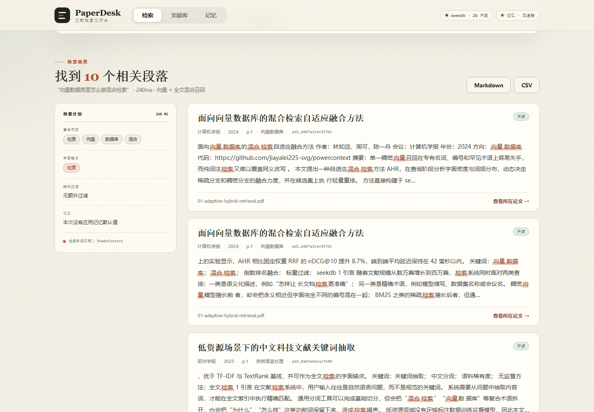
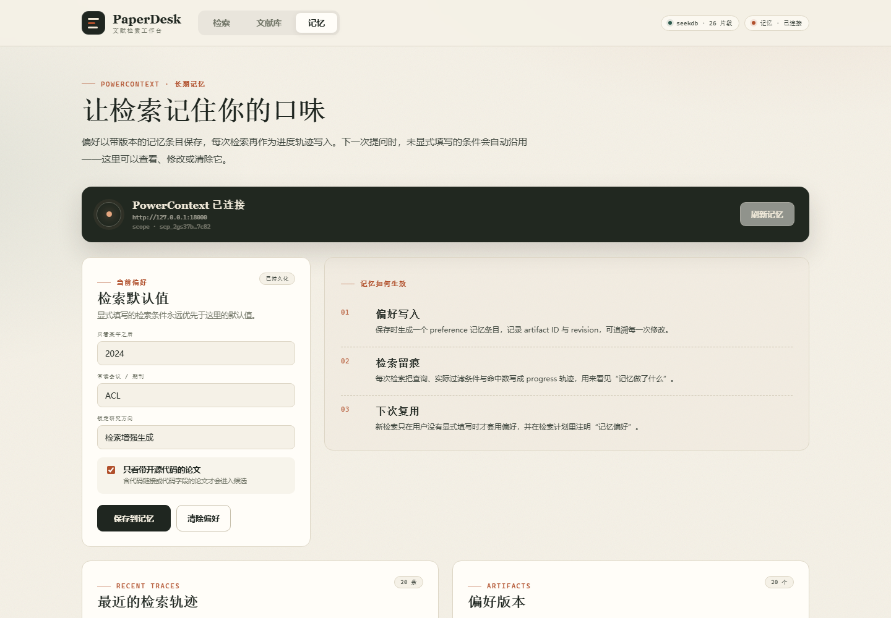
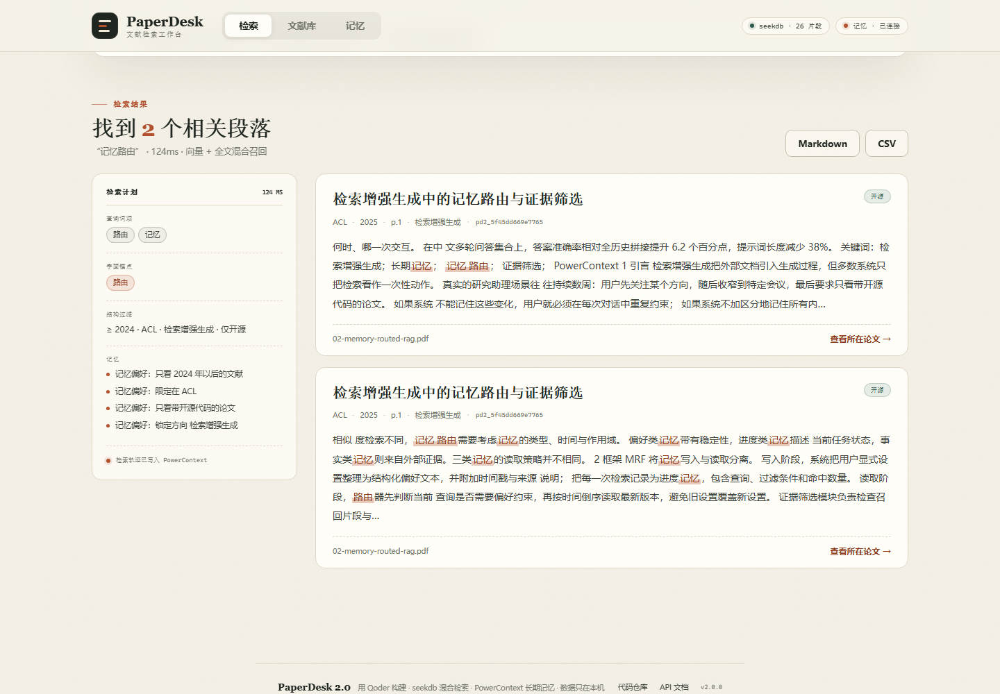
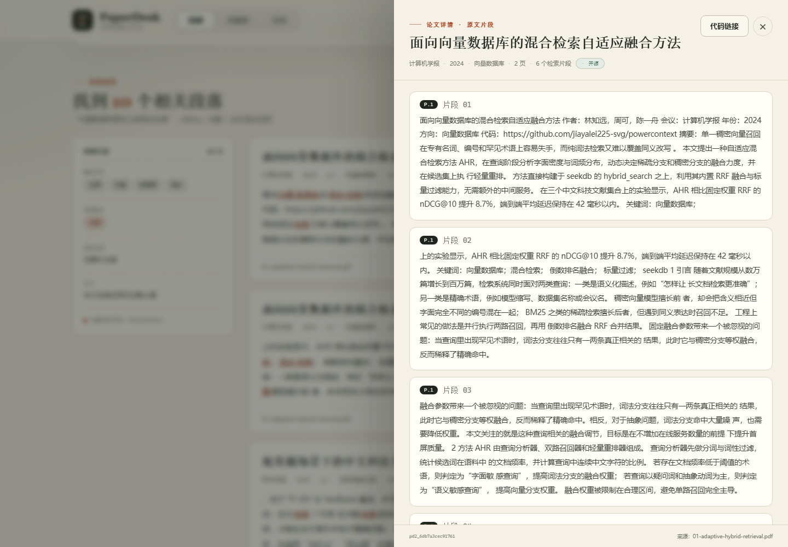
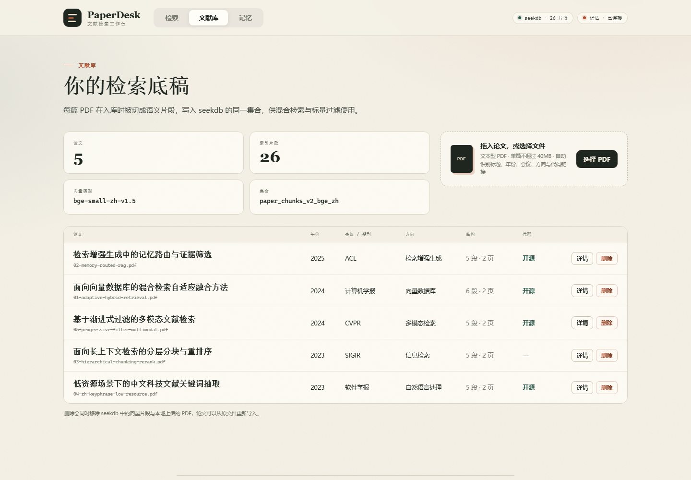
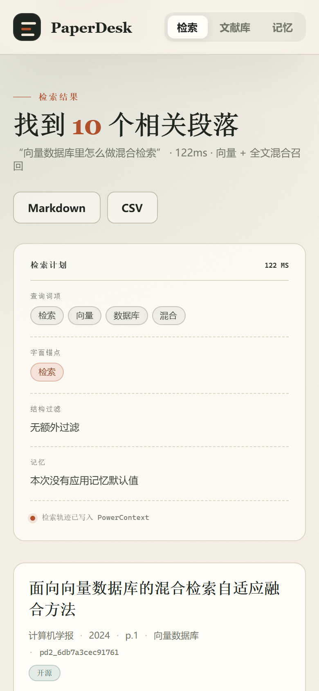
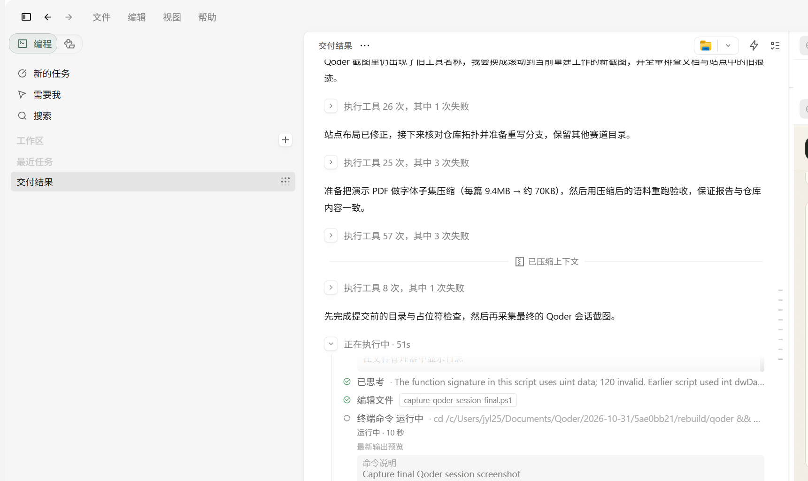

只记得结论，不记得出处
传统文件搜索只能找到 PDF，找不到第 3 页第 2 段。PaperDesk 从段落级建立索引，命中直接给页码和原文。
段落级定位Qoder × OceanBase 2026 · 文献检索赛道
PaperDesk 把 PDF 切成语义片段，用 seekdb 在一次查询里完成向量召回、全文召回、标量过滤和 RRF 融合；用 PowerContext 记住你的年份、会议与方向偏好。下一次提问，条件自动带上。

01 问题
不是缺 PDF，而是缺一条从模糊记忆到具体段落的路。
传统文件搜索只能找到 PDF，找不到第 3 页第 2 段。PaperDesk 从段落级建立索引，命中直接给页码和原文。
段落级定位纯向量擅长语义，却会混淆编号和专有名词；纯关键词覆盖不了改写。两路召回必须在同一引擎里融合。
dense + full-text + RRF年份、会议、方向、是否开源——这些偏好不该反复输入。PowerContext 把它们变成下一次检索的默认值。
跨会话记忆02 检索链路
查询理解、记忆合并、混合检索、结果整形；核心召回交给 seekdb，核心记忆交给 PowerContext。
jieba 词性筛选得到查询词项；用语料稀有度挑一个字面锚点，交给全文召回。
读取 PowerContext 偏好，逐字段补全用户没填的条件；显式输入永远覆盖记忆。
dense KNN、full-text、标量过滤同时下推，内置 RRF 融合，只调用一次。
每篇最多 2 段，保留论文多样性；展示页码、代码链接，可导出 Markdown / CSV。
# 语义、字面、过滤，一次查询
result = collection.hybrid_search(
query={
"n_results": limit * 3,
"where_document": {"$contains": literal},
"where": where,
},
knn={
"query_texts": [query],
"n_results": limit * 3,
"where": where,
},
rank={"rrf": {
"rank_window_size": 60,
"rank_constant": 60,
}},
n_results=limit,
include=["documents", "metadatas", "distances"],
)检索存储只有 seekdb 一个集合：paper_chunks_v2_bge_zh。没有第二个向量库，也没有应用层手写 RRF。
本地 bge-small-zh-v1.5，512 维，中文语义相近即可命中。
稀有词作为锚点，专有名词、编号、缩写不会被向量稀释。
年份、会议、方向、开源标记同时作用于两路召回。
seekdb 内置 reciprocal rank fusion，不引入第二套检索服务。
03 长期记忆
偏好以带标记、可版本化的条目写入 PowerContext；每次检索再写一条轨迹。保存后，下一次不填条件也会自动沿用。


art_672b745c33194117b3c4996f7d6a3cfa
真实保存响应中的 artifact ID；同一份偏好可追溯 revision。
本次填了年份或会议，就用本次的；记忆只补空缺，不覆盖用户。
PowerContext 不可用时自动降级，上传、检索、删除与导出不受影响。
04 真实运行
5 篇原创演示 PDF、26 个片段、11 个单元测试、19 项端到端验收，全部在本机真实执行。



05 Qoder 开发记录
后端 8 个模块、React 前端、样例生成、测试、验收与站点，均在本 Qoder 会话中产生。账号 UID 与真实会话截图一并提交。

06 本地运行
不需要云服务、不需要 API Key。首次运行会安装依赖、下载本地 BGE 模型，并启动 PowerContext。
powershell -ExecutionPolicy Bypass ^
-File scripts\start.ps1打开 http://127.0.0.1:8080
bash scripts/start.sh打开 http://127.0.0.1:8080
VERIFYpytest · python scripts/accept.py --base http://127.0.0.1:8080
DATAPDF、seekdb 索引与记忆都在本机；.env 与 PowerContext 配置不会进入仓库。
PORT8080 被占用时设置 PAPERDESK_PORT=18081。